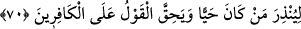

diriltmesi gibi. Arabî Peygamber Muhammed (a.s.)’ın nübüvvetinin delili gönüller
yolundan gelmiştir. “Hayır, o (Kur’an), kendilerine ilim verilenlerin sînelerinde (yer
eden) apaçık âyetlerdir.” (el-Ankebût, 29/49). Gerçi Hz. Mustafa (s.a.)’in de ayın
yarılması, taşın teşbih etmesi, kurdun konuşması, kelerin selâm vermesi ve bunlardan
başka gözle görülen mûcizeleri çoktu. Maksad ise şudur ki Mûsâ (a.s.) asâsı ile, Îsâ
(a.s.) ölüleri diriltmekle Hz. Mustafa (a.s.) ise Allah’ın kelâmı ile meydan okudu.
Nitekim âyette “Haydi onun benzeri bir sûre getirin.” (el-Bakara, 2/23). buyrulmuştur.
Mûsâ (a.s.)’ın asâsına her ne kadar rabbânî sanat yüklenmiş olsa da bir dikenli ağaçtan
(avsec) idi. Îsâ (a.s.)’ın nefesine lütf-i ilâhî yüklenmiş olsa da bu beşer sinesine
emâneten verilmiş bir şeydi. Ey Muhammed, insanlara tebliğ için gittiğinde yanında
nefesi ve ağacı götürme. Çünkü değnek eşeklere yakışır. Nefes de hasta olanların
nasibidir. Sen bizim kadîm sıfatımız olan Kur’ân-ı Mecîd’i kendin ile götür ki senin
mucizen bizim sıfatımız olsun.”
70. Diri olanları uyarsın ve kâfirler cezâyı hak etsinler diye.
Kur’an “Diri” akıllı anlayışlı “olanları” faydalıyı zararlıdan ayırabilen ve kalbini
yaratılış gayesine uygun kullanıp onu boş ve lüzumsuz işlerde zâyi etmeyenleri
“uyarsın.” Çünkü gafil olan ölü mesabesindedir.
Kalb için akıl ve anlayış, beden için hayat mesabesinde kabul edilmiştir. Çünkü
bedenin menfaatleri hayata bağlı olduğu gibi kalbin menfaatleri de akla bağlıdır. Burada
işâret vardır ki her kalbin hayatı Allah Teâlâ’nın nûru ile ve Allah Teâlâ’dan bir ruh
iledir. Böyle bir kalbe uyarı fayda verir ve tesir eder. Kalbin uyarıdan etkilendiğinin
emaresi ise kalbin dünyadan yüz çevirmesi, âhirete ve Mevlâ’ya yönelmesidir.
Bazıları der ki: “Diri olanları” Allah’ın ilminde mü’min olan demektir. Çünkü ebedî
hayat îmân iledir. Yâni ebedî hayata sebep olduğu için Allah’ın ilminde mü’min olanın
îmanı, bedene nisbetle hayat mesâbesindedir.
İbn Atâ der ki: “Allah’ın ilminde diri olanı Allah Teâlâ kendisine nazar etmek,
kendisi hakkında anlayış, kendisinden dinlemek ve kendisine selam vermekle diriltir.”
Cüneyd Bağdâdî der ki: “Diri olan hayâtı nefsinin bakasıyla değil, yaratıcısının
hayatıyla olandır. Bakası nefsinin bakasıyla olan kimse yaşayan ölüdür. Hayatı Rabbiyle
olanın gerçek hayatı vefatı ânındadır. Çünkü o ölümle asıl hayat rütbesine ulaşır.”
Uyarı kalbi diri olana da ölü olana da şâmil olduğu halde kalbi diri olana tahsis
edilmesi, uyarıdan yalnız kalbi diri olan faydalandığı içindir.
“Ve kâfirler” inkârda ısrar edenler “cezâyı” azâbı “hak etsinler diye.” Yâni azâb
kelimesi; “Andolsun ki cehennemi tümüyle insanlar ve cinlerle dolduracağım.”
(Hûd, 11/119) sözü onlara vâcib olsun diye Kur’an indirildi. Çünkü ortada şüphe